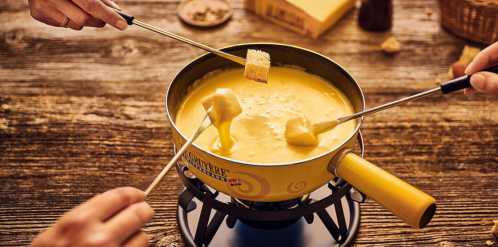
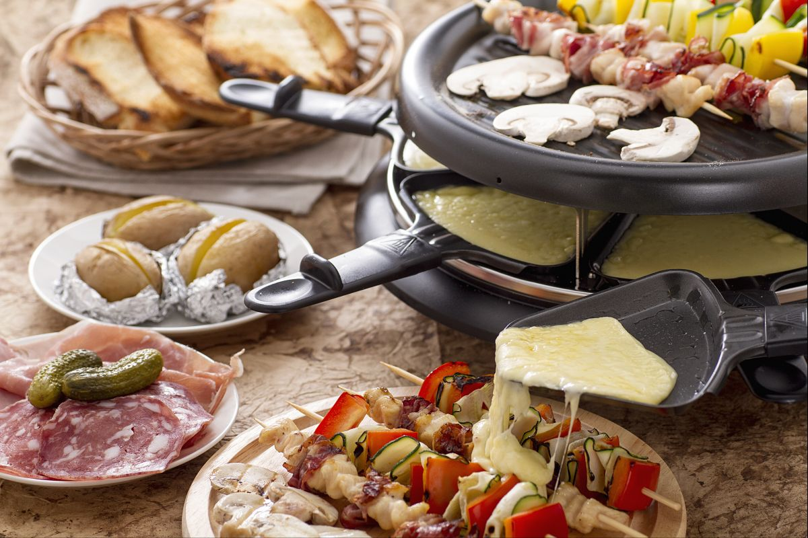
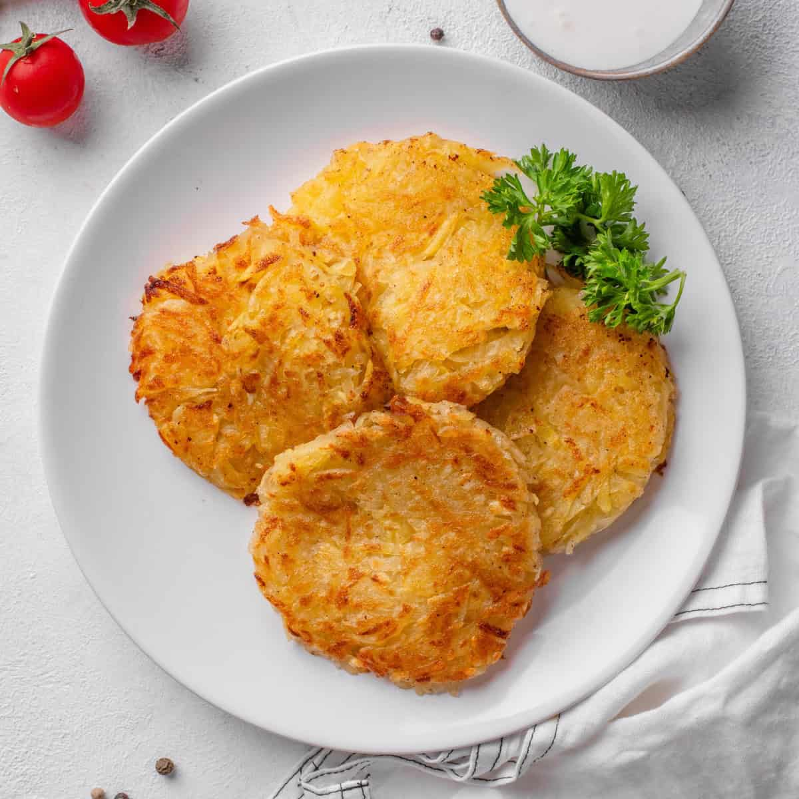
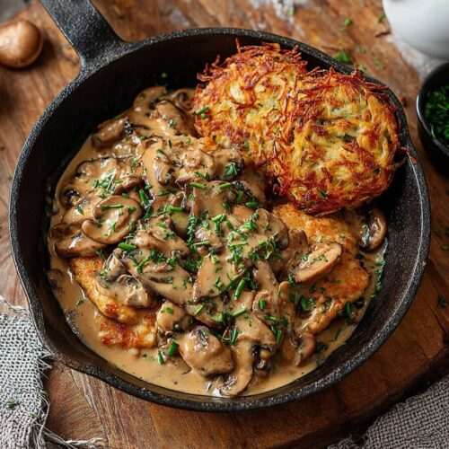
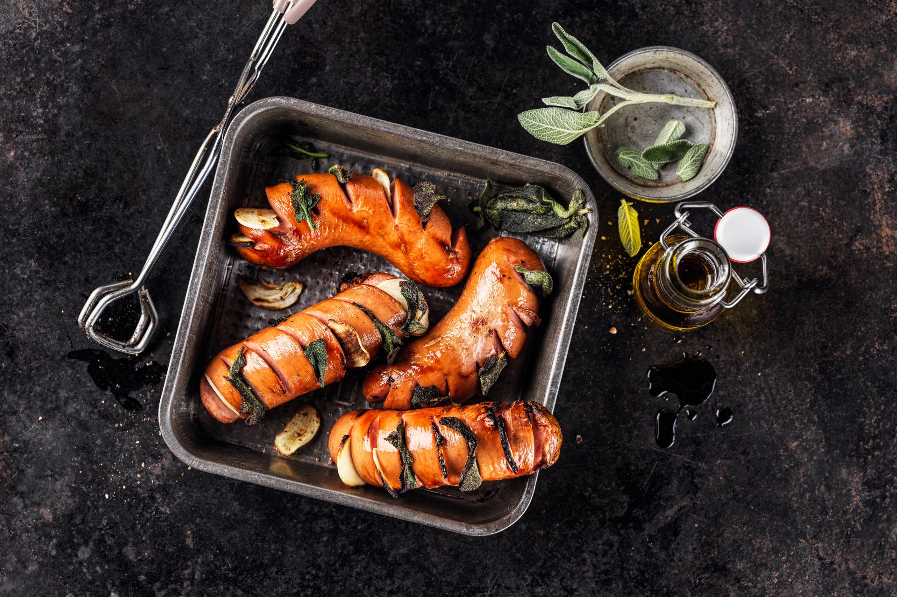

Swiss cuisine reflects the country's four linguistic regions — German, French, Italian, and Romansh — each contributing distinctive dishes and flavours. What unifies them is a commitment to quality ingredients, hearty portions, and centuries of tradition. Switzerland is also famous for its exceptional chocolate and cheese industries.
Classic Swiss Dishes

Fondue
The national dish — melted cheese (usually Gruyère and Emmental) in a communal pot. Eaten by dipping cubes of bread on long forks. An essential Swiss experience, especially in winter.

Raclette
A wheel of Raclette cheese is melted and scraped onto potatoes, gherkins, and pickled onions. Simple, comforting, and utterly delicious. A staple of Swiss mountain restaurants.

Rösti
Switzerland's beloved potato dish — grated potato pan-fried into a crispy cake. Often served as a side dish or topped with cheese, egg, or bacon. A symbol of German-Swiss cooking.

Zürcher Geschnetzeltes
Zurich's signature dish — thin strips of veal in a creamy mushroom and white wine sauce, typically served with Rösti. A must-try in any Zurich restaurant.

Cervelat
The unofficial national sausage of Switzerland! This mild, smoked sausage is eaten grilled, in salads, or split and roasted over a fire. Beloved by Swiss people of all ages.

Birewegge
Birewegge is a traditional pear-and-nut loaf from central Switzerland, especially popular at Christmas.
Swiss Chocolate
Switzerland produces some of the finest chocolate in the world. The country invented milk chocolate (Daniel Peter, 1875) and the Swiss conching technique that gives chocolate its smooth texture. Famous brands include Lindt, Toblerone, Cailler, and Läderach. Visiting a chocolate factory is a highlight for many tourists — the Cailler factory in Broc and the Lindt Home of Chocolate in Zurich are especially popular.
Swiss Cheeses
| Cheese | Region | Character |
|---|---|---|
| Emmental | Canton Bern | Mild, nutty, the famous "holey" cheese |
| Gruyère | Canton Fribourg | Rich, slightly salty, essential for fondue |
| Appenzeller | Canton Appenzell | Herby, spicy, rubbed with secret herbal brine |
| Raclette | Canton Valais | Semi-firm, melts beautifully |
| Sbrinz | Central Switzerland | Hard, aged, similar to parmesan |
| Vacherin Mont-d'Or | Canton Vaud | Soft, seasonal winter cheese |
Swiss Wines & Drinks
- Swiss wine – Over 200 grape varieties! The Valais and Vaud cantons produce excellent Chasselas white wine
- Rivella – Switzerland's unique national soft drink made from milk whey
- Kirsch – Cherry brandy distilled in central Switzerland, used in fondue and desserts
- Absinthe – The Val de Travers in Neuchâtel is the historic birthplace of absinthe
- Swiss beer – Feldschlösschen, Cardinal, and Rugenbräu are beloved local brews